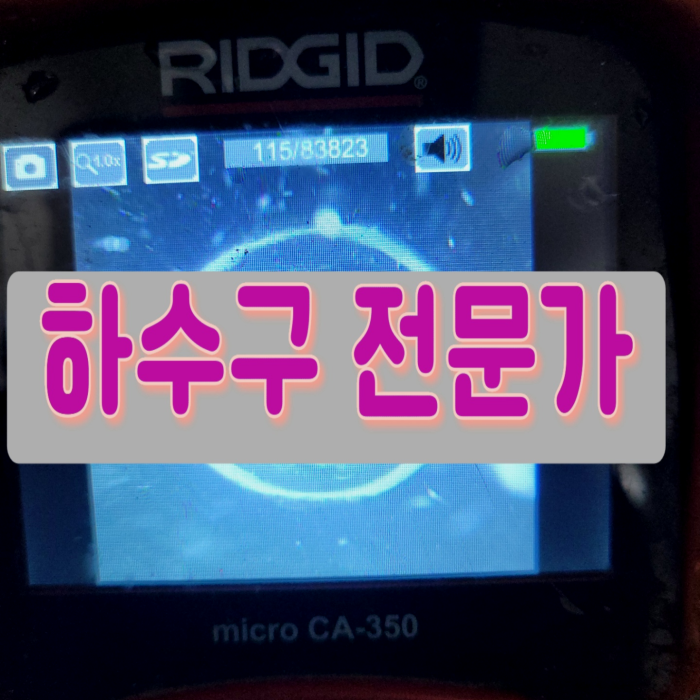
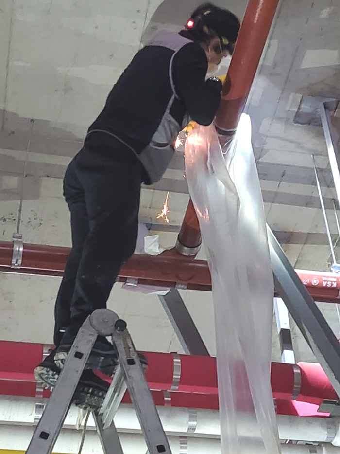
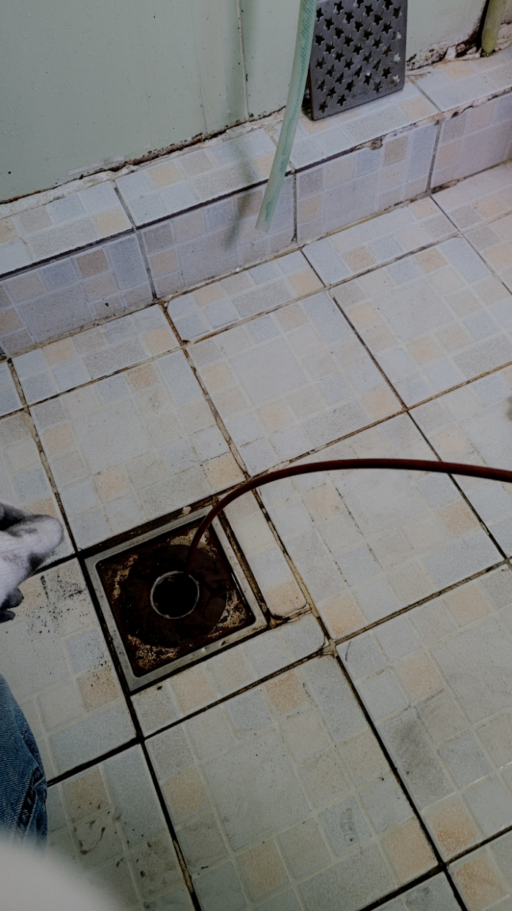
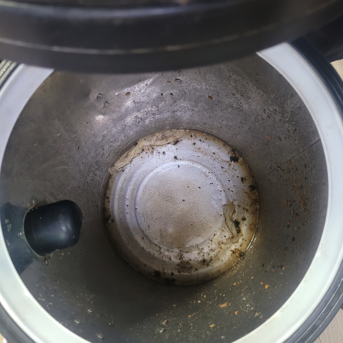
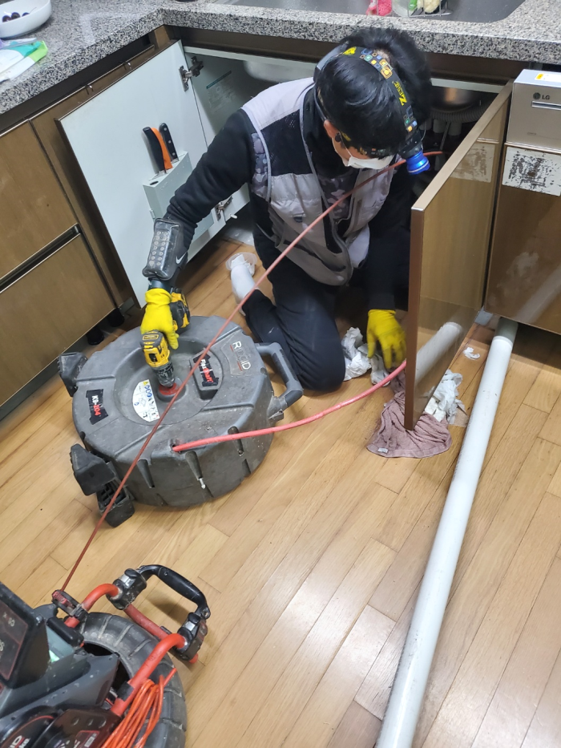
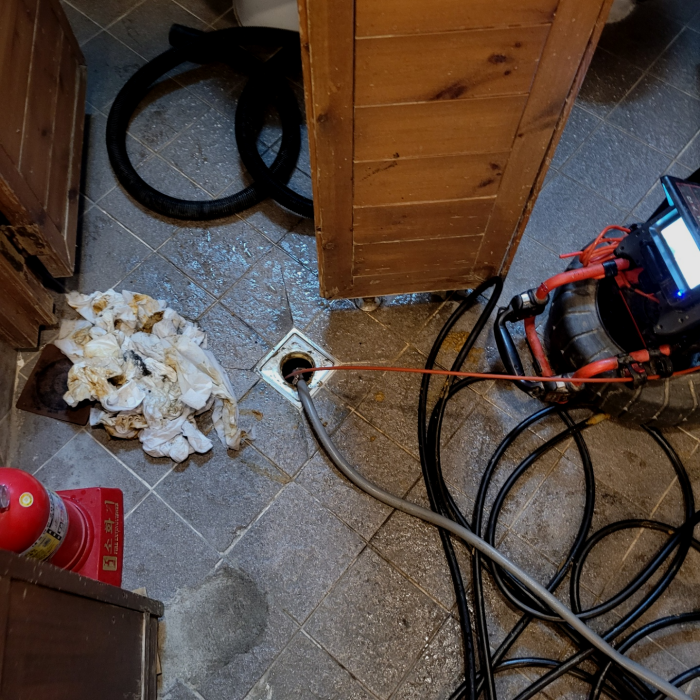
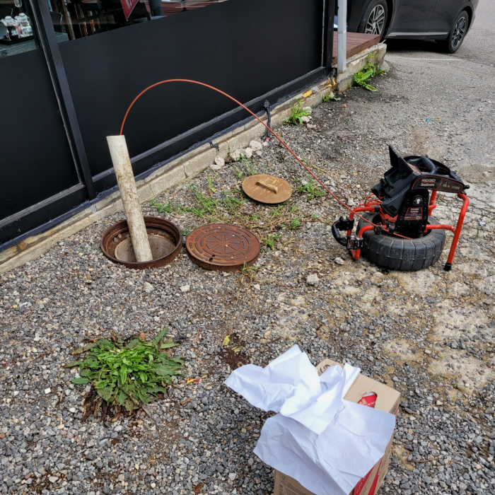

🏠 이천 사음동 배수구막힘 관고동 하수구역류 배관뚫는설비업체
용인 싱크대막힘 전문 시공 후기

📋 작업 개요
- 위치: 용인
- 서비스 유형: 싱크대막힘, 변기막힘, 하수구막힘, 배관막힘, 누수수리, 역류해결, 뚫는업체, 배관청소, 고압세척, 설비공사
- 작업 일시: 2024. 3. 5. 23:23
- 업체명: 하수구수사대 (010-5615-2118)
🔍 문제 상황
안녕하십니까^^
설비전문업체 "하수구수사대"를 찾아주셔서 고맙습니다.
하수도배관 내부를 해결하려고 하면 다 달라서 그만큼 경험이 많아야 지금 생긴 문제를 바로 해결할 수 있습니다. 그러므로 지금 하수도가 막혔다고 한다면 경력이 많은 곳을 불러서 바로 문제를 캐치하고 해결해 줄 곳을 찾아서 처리해야 합니다. 아니면 나중에 더 막혀서 아예 터질 수도 있습니다.
이천 사음동 배수구막힘 관고동 하수구역류 배관뚫는설비업체

🔎 원인 분석
💡 전문가 진단: 이천 사음동 배수구막힘 관고동 하수구역류 배관뚫는설비업체
가격만 보고 의뢰하셨다가 멀쩡한 작업은 받지도 못하고 애꿎은 문제만 생겨 골치 아파지는 경우도 생겨 전화를 주시는 분들도 종종 있습니다. 하수도여러군데 건드리다가 실패해버린 곳도 도 맡아서 하고 있는 곳이 여기입니다.
뚫고 난 후에는 벌레 꼬임과 냄새까지 해결이 되는데 무리하게 배수를 건드렸을 경우 공사를 해야 할상황도 생기니 배관 케어를 할 수 있는업체에 맡기시는 것이 바람직합니다.어디로 해야 할지 고민될 때 실력부터견적 등등 살펴보셔야 할 것들이 있습니다.
뚫음 현장뿐만 아니라 부속품 교체를 하거나 누수현장도 실생활에 필요한 모든 부분들을 도와드리고 있어요. 혼자서 어려울 경우 저희 배수뚤어드림을 통해 도움을 받아보세요. 어려운 현장이라고 하여도 항상 완벽하게 작업해 드려요.
강력하고 사용하기 힘든 고압세척기 같은 기계도 구비되어 있기 때문에 효과적으로 작업이 가능한 부분과 오랜시간동안 쌓아올린 경험과 노하우를 토대로 고객님의 마음을 사로잡는 배수관전문가들로 구성되어 있어요! 가정집 뿐만아니라 배수관배관이 있는 장소면 다 방문해서 해결해드립니다.

🔧 작업 과정
배관 안에 있는 것이 무엇인지 파악도 못해놓고 통수만 해준다면 다시 막혀버리게 되는 경우의 수만 늘어나게 되겠죠. 퇴수스케일링을 할 때는 여러 번 받을게 아니라 딱 한 번만으로 해결해야 해요.
고객님도 곁에서 함께 확인하면서 눈으로 볼 수 없는 곳도 확인할 수 있는 게 신기하다고 말씀해 주셨습니다. 처음 이사 온 뒤 악취가 나는 것 같아 업체에 도움을 받고자 연락했지만 가벼운 체크만 하고 다른 관리가 없어서 답답했었다고 합니다.
물을 틀어도 전혀 흘러내려가지 않는 모습이었습니다. 저희는 배수구배관 내부가 무언가로 인해 꽉 막혔다는 걸 짐작할 수 있었습니다. 고객님께 충분한 설명을 드린 뒤 배수관을 해체해 내부를 살펴보았는데요. 내부가 깨끗한 편은 아니었지만 이물질들이 그렇게 많진 않았습니다.
배출구내시경이없다면 어떤곳이막혀있는지 알방법이없기에 아무기계나 넣기만하고 시간만지나고 해결하지못할겁니다. 간간이보면 확실하게뚫는다해서 의뢰했지만 문제도찾지못하고 실패할때도 볼수가있으신데요.
전문기사의 실력으로 빠르게 고치실수있던것도 위와비슷한 문제때문에 증상이더 나빠지게됩니다.돈을아끼기위해서 할수있다면 하수도뚫으실려고 하는생각들을 지양하셔야합니다.
전체적으로 막혀있던 배관 배관의 관로를 뚫어냈으니 이제는 작업한 부분에 대해 고객님께 한번 보여드려야 하겠습니다. 배관배관카메라를 투입해 확인을 해보면 말끔하게 처리가 되어서 물이 제대로 배수가 되는 부분까지도 확인시켜드렸습니다.
그리고 혹시라고 배출구배관 막힘이 발생하였을 때에는 망설이지 말고 빠르게 전문설비업체에 문의해서 해결하시기 바랍니다. 한번 배출구막힘이 발생했을 때 확실하게 해결해야 재발이 발생하지 않습니다.


✅ 작업 완료
이렇게 돼 버린다면 아까운 돈만 배로 들어가게 되어 더욱 골치가 아파지실 텐데요배수구막힘 이런 비슷한 사례를 사전에 막기 위해서는 확인하셔야 할 사항들이 한두 가지가 아닙니다. AS 서비스도 중요합니다.
#하수구막힘 #하수구뚫음 #하수구역류 #씽크대막힘 #싱크대역류 #오수관막힘 #하수구청소 #욕실하수구막힘 #변기막힘 #하수구뚫는비용 #싱크대수리 #화장실막힘




⚠️ 베란다 누수 및 방수 관리 방법
- ✅ 비가 많이 올 때 창틀 주변이나 아래층 천장에 얼룩이 생기는지 정기적으로 확인해 보세요.
- ✅ 우수관 주변 실리콘 마감이 들뜨거나 깨진 틈새가 있는지 손상 여부를 수시로 체크하세요.
- ✅ 베란다 바닥 타일의 줄눈(메지)이 소실되면 그 틈으로 물이 침투하여 누수가 유발됩니다.
- ✅ 누수 의심 증상 발견 시 방치하면 아래층 손실이 커지므로 즉시 전문가의 진단을 받으십시오.
💡 핵심 정리
- 확실한 장비 작업(내시경 점검 및 샤프트 스케일링)으로 원인을 뿌리 뽑습니다.
- 작업 후 1년 이내에 동일한 부위 재발 시 100% 무상 A/S 서비스를 보장합니다.
- 서울 · 경기 · 인천 전 지역에 24시간 언제든 긴급 출동할 수 있도록 항시 대기 중입니다.
❓ 자주 묻는 질문 (FAQ)
🚨 용인 싱크대막힘 문제로 고민이신가요?
정확한 원인 진단과 확실한 시공으로 재발 없는 해결을 약속드립니다.
24시간 긴급 출동 | 서울 · 경기 · 인천 전지역 | 1년 내 재발 시 무상 A/S